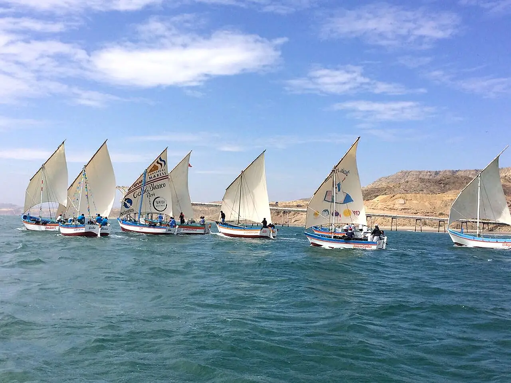

Cabo Blanco
Piura, Pérou · surf

Village de pêcheurs du nord du Pérou dont la gauche tubulaire, rapide et creuse, casse sur un fond de roche. Elle marche surtout avec les houles du nord-ouest, pendant l’hiver boréal.
- Lieu
- Piura, Pérou
- Niveau
- Expert
- Activités
- surf
- Type d'eau
- Mer / océan
- Coordonnées
- -4.25, -81.24 (position approximative du secteur)
Dangers à connaître
- Fond de roche très peu profond.
- Tube rapide et puissant, line-up compétitif.
Le conseil d'Ocean Buddy
Réservé aux surfeurs confirmés : observe longuement avant d’entrer, la vague est rapide et le fond peu profond.
Ouvrir dans Ocean Buddy Télécharger sur l'App Store
Source : Fiche Ocean Buddy · septembre 2026 · à vérifier localement.